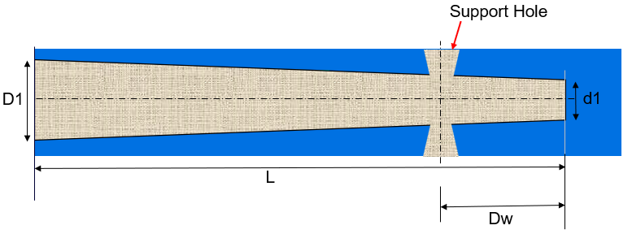
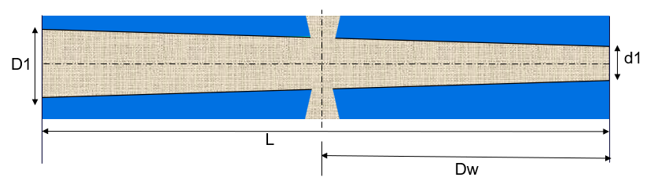
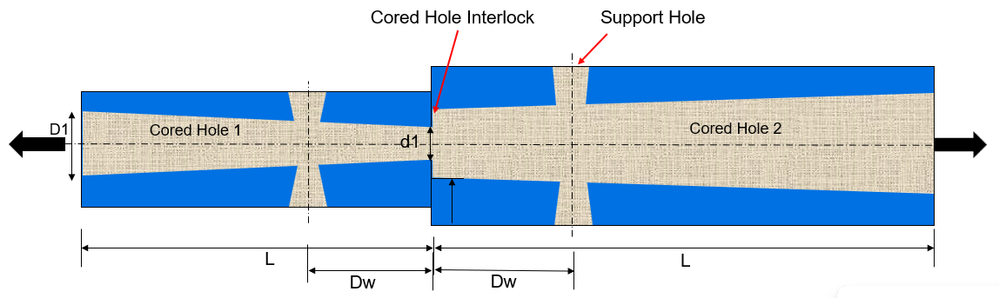

長いコアの場合、このルールはコア端からサポート穴までの最大距離をチェックし、構成された値と比較します。止まり中子穴（Blind-cored holes）の場合、距離計算は止まり中子穴の端部から測定されます。これはその位置で支持が必要となるためです。貫通中子穴（through-cored holes）の場合、距離計算は中子穴のいずれかの側から測定されます。中子穴タイプに基づいてこれらの特定の距離計算を考慮することで、このルールは長いコアの構造的完全性を維持し、成形プロセス中のたわみリスクを最小化します。
長く、かつ支持されていないコアのたわみは、成形プロセスで一般的に発生する問題です。高い成形圧力のため、長いコアは特にたわみやすく、その結果としてコア周辺でフラッシュが発生する問題につながる可能性があります。この問題を緩和するには、コア同士の間に十分なインターロック（かみ合わせ）が確保されていることが重要です。このインターロックは、成形中にコアを安定させ、不要なたわみを防ぐのに役立ちます。インターロック形状の作成が現実的でない場合の代替策として、コアの反対側にコアサポート穴を追加する方法があります。これらのサポート穴は追加の安定性を与え、コアが十分に支持された状態を保つことで、たわみのリスクを最小化します。このアプローチにより成形プロセスの健全性を維持し、コア周辺のフラッシュのような欠陥の発生を低減できます。
長いコアでのコアのたわみを回避するための一般的なガイドラインとして、コアの反対側にサポート穴を追加することが推奨されます。これらのサポート穴はコアを安定させ、高い成形圧力下でコアがたわむのを防ぎます。反対側にサポート穴を配置することで、コアが均等に支持され、成形プロセス中の不要な動きが低減されます。
止まり中子穴

貫通中子穴


ここで、
L = 全長
D1 = 中子穴の最大直径
d1 = 中子穴の最小直径
Dw = サポート穴までの最小距離
注記：
止まり中子穴の場合、このルールは止まり中子穴端部からのサポート穴の最大距離をチェックし、単一の不適合インスタンスを表示します。また、止まり中子穴端部から最も近いサポート穴をチェックします。
貫通中子穴の場合、このルールは中子端部のいずれかの側にあるサポート穴を検証し、単一の不適合インスタンスを表示します。また、いずれかの端部からの最も近いサポート穴距離をチェックします。
止まり中子穴が2つある場合、このルールは各中子穴についてサポート穴の最大距離をチェックし、各中子穴について最も近いサポート穴距離をチェックし、各中子穴に対して2つの不適合インスタンスを表示します。
コア軸とコアの抜き方向が一致している場合、長いコアとして扱われます。